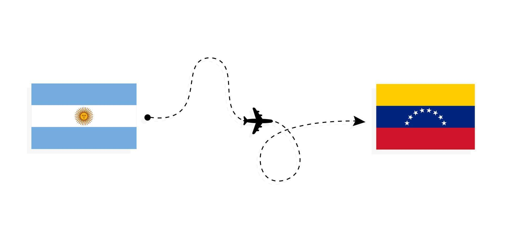

Mi nombre completo es Abrahams Alberto Nieves Olivo, nací el 06 de Febrero de 2004, por lo que Actualmente tengo 21 años.
Soy de Venezuela, más especificamente de Maracay, estado Aragua.
Vivo en Argentina desde hace 6 años, llegamos el 16 de febrero de 2019
Vivo Junto a mi papá, mi mamá y mi hermano menor
Me encanta hacer deporte, de hecho, practico Karate desde los 5 años y soy cinturon negro 3era dan
He participado en multiples torneos nacionales e internacionales, donde he podido salir campeón
Actualmente estoy entrenando a mi sobrino (Mi primer alumno), el cual ya ascendió a cinturon Amarillo

Desde que soy chiquito, mi comida favorita siempre ha sido la lasaña, o como le decimos en Venezuela, pasticho.